Teaching Experience
University of Wyoming and Northern Colorado University
- Discrete and Combinatorial Mathematics (MATH 5700 - Summer 2012) For highschool teachers
University of Calgary
- Calculus I (Math 265 - Fall 2017)
- Linear Algebra (Math 211 - Spring 2017)
- Discrete Mathematics (Winter 2017)
- Linear Algebra (Math 211 - Fall 2016)
- Introductory Calculus (Math 249 - Spring 2016)
- Calculus I (Math 265 - Fall 2015)
Western Illinois University
- Calculus I (Math 133 - Spring 2015)
- General Elementary Statistics (Stat 171 - Spring 2015)
- Concepts of Mathematics (Math 101 - Fall 2014)
- Dr. Monfared is very helpful and I can tell he cares about his students and enjoys coming to teach. Overall he is a very good instructor.
- He is very helpful.
- He's a great teacher.
- Very helpful when you ask a question. I usually don't understand when he first explains it but I do after I ask questions about the worksheets. Readily available and open.
- General Elementary Statistics (Stat 171 - Fall 2014)
- My Instructor does a great job of teaching.
- He does very well teaching, and has the best teaching style I've seen for math. He gives plenty of handouts and explains everything clearly.
- I think overall I have a good professor. Ive went to his office hours many times and he was helpful.
- Very organized.
- Great quality teaching.
- Math usually isn't my subject, but Professor Monfared does a good job explaining everything. I really like the online homework and the worksheets we do in class together. Helps me learn the material easier with lots of examples that he helps guide us with and helps with homework.
- I like the way of learning because he teaches, we learn then we do multiple examples together in class and once it is time to do homework online, it is somewhat a breeze. He is always willing to help in class, after class and through email.
- Clarity, encouragement, and helpfulness.
- He is a great teacher. He takes it slow enough for everyone to understand. He will help you when asked and is always willing to extend the homework if you need more time to get everything right.
- Professor Monfared is well prepared and very helpful. He presents the material in a way that is easily understood, and his tests and homework are fair.
- The worksheets handed out in class are a big help.
- Overall I enjoy the class.
- He was good and knew what he was talking about.
- He is so helpful for me.
- My instructor is very helpful and if I need help he will quickly respond to my emails. He seems to want everyone in the course to do well.
- He gave worksheets to follow during class and allowed me and other to actually participate. This was very helpful and he should continue for future classes.
- Things that I did find helpful are the written homework, and his openness to questions. He just wants you to have an understanding and clear knowledge of the subject rather than just getting you through the course as quick as possible.
- The worksheets help significantly.
University of Wyoming
- Elementary Linear Algebra (MATH 2250 - Summer 2014)
- After the first week when i asked more questions I started learning more and I think it's effective. I could do the things I understood and when it got hard, class time was utilized efficiently to understand more what was going on. The assignments were a lot to do but its a summer class. It should be that way. It was not too much to where I was inundated but enough to keep my focused and in a learning mode.
- Keivan's teaching method was having us watch and read the class materials before we covered them in class. I liked this approach as it allowed nearly the entire class period to be open for questions if we had problems.
- I felt like Keivan did a great job teaching this course. We used effective technology. I really liked the supplemental lectures from MIT. It really helped with understanding. But over all, I think that this class really challenged me. Keivan, Thank You! I really enjoyed the course!
- I liked the setup of the class. Although it was a lot of work outside of class time I found the videos and worksheets helpful.
- The course has been a fantastic introduction to Linear Algebra, and its many applications. The book was (in my opinion) the best textbook I have read to date. The setup of the class with the preassigned topics and then working problems and concepts was the optimal way to learn the material. Thank you for an informative, and fun class.
- Keivan did a great job applying the topics needed to understand and comprehend linear algebra. The course load was quick, but maintained a pace that allowed for the full grasp of the topics needed to move on. I think the homeworks and tests applied a good amount of the knowledge learned while keeping the course challenging.
- Overall the semester went well. I understand that there was A LOT of material to cover in just 6 weeks; watching the videos every single night was alright.
- Keivan was a great instructor. He was extremely helpful in class and always explained things in a clear manner. The assignments were very helpful in cementing what the video lectures and book were teaching. Everything was done extremely well.
- I want to say that I really enjoyed the class.
- I felt that Keivan did a great job in a short amount of time, with difficult material, and a class with very diverse experience.
- I enjoyed the format of this course in which we watched the lecture outside of class, took a quiz at the beginning of class, received a short overview of the lecture, and then worked problems in class. Working problems in class helped reinforce the material and if we had any questions, Keivan was always willing to help. I thought the tests, homeworks, quizes and make up policy for the quizes were very fair.
- Geometry and Measurement (MATH 2120 - Spring 2014) For elementary school teahers
-
Calculus III (MATH 2210 - Fall 2013) - Discussion Leader
- Overall Keivan was extremely helpful.
- Keivan was very helpful. I went to his office hours four or five times. He helped clear up my struggles. And he did a great job leading discussion and helping students.
- Great teacher. Always provides helpful information to help the student to solve their problems.
- He did a good job in answering the students questions and any topic that wasn't covered during the class.
- Keivan is awesome.
- Keivan was great.
- Hands down the best teacher I have ever had for a class in college, basically became friends with him and he taught me almost all of Calc 3.
- Very helpful and very understanding of the material. One of the best, if not the best, math instructor I have ever had at UW.
- Very helpful and knowledgeable.
- He was helpful. Knows the material and is almost always able to explain it in an easy way.
- Keivan was an excellent teacher, he was the best teacher I have had at UW thus far. He was kind, knew his material very well, and was committed to fully answering any and all questions during discussion. He clearly made himself available for students wanting to meet for questions above and beyond the requirements and always brought a positive and helpful attitude to any meeting or discussion.
- Very effective! Did a good job on making it challenging.
- He is a very nice guy and enjoys teaching. He seems to really care about his students and help them out.
- He was very helpful when he would go over material.
- Keivan was a great teacher to have, and from conversations with other students, I feel like he did a better job in my discussion than others. He was very knowledgeable over the topics in class and knew more than needed to teach this subject.
- He was very helpful with the questions I had about any of the problems.
- I liked how Keivan sometimes explained problems in a different way - this sometimes helped me understand difficult concepts. I might've preferred working through problems as an entire class as opposed to in small groups, however.
- Keivan Monfared did an excellent job of breaking down problems into easily understandable and manageable concepts. He also did a good job in summarizing the chapter we would currently be working on and Keivan was always good at going over challenging problems on there one-on-one if needed.
- Keivan performed well when addressing topics with the class and always worked with students as they needed, including offering different ways of approaching or thinking about a problem. the discussion material has proved to be exceptionally invaluable to me.
- Keivan was extremely helpful. He does a very good job of explaining difficult topics in ways that are easy to understand. Without his help I would not have nearly the understanding of the material that I do now.
- was very good as explaining things at the correct level.
- Had some really innovative ideas to get the class to mingle and partner with people they wouldn't usually work with. Was knowledgeable and helpful with the subject matter.
- He ran an effective class. It was well ran.
- he was fun and helpful in every class and he showed good understanding of the subject
- Keivan is an incredibly intelligent teacher who really is able to explain Calc III in a way that I understand. I think he is incredibly helpful, and I think he should be a professor.
- I liked that Keivan could explain the material in more than one way. I feel like that is hard to come by, especially in math. He was very helpful and I learned the material better in his class because he led us through examples and could give an explanation of the problem.
- Keivan was generally very helpful.
- Keivan is a very helpful instructor and helps us to understand the material by explaining it in simpler terms.
- He is a great teacher, he really understood how to do the math and always was able to help with the questions we asked.
- Keivan was always knowledgable and helpful
- Keivan truly wanted us to succeed, knew his material, and knew how to explain it. He was engaging and helpful.
- He seemed well organized and knew the material. He had us to get into groups which increased our interaction with each other. He answered questions well and helped when needed.
- keivan is going to be a great teacher in the future. always very organized and helpful. I learned far more from keivan than others.
- Keivan not only understands the material extremely well, but he is very skilled at teaching the material. He is also very good at getting the class to discuss with one another.
- describes things in multiple ways which is VERY helpful for understanding.
- Keivan was very helpful and always answered my questions as clearly and effectively as he could. He seemed to care a lot about student success and offered great advice. He would explain details about integration that didn't make sense until he did. Also, he drew effective drawings on the chalk board that helped illustrate what was going on, which made everything clearer.
-
Calsulus III (MATH 2210 - Summer 2013)
- Professor Monfared was thoroughly effective at teaching multivariable calculus. He assigned useful work, provided useful material, work plenty of examples, and was always accessible in the math lab on certain days of the week. My favorite part of his teaching style was the time he took to do reviews before exams and worked even more examples even though he already did many in class. He cares whether or not his students understand the material. He is also very effective at explaining very complicated material the course so often presented. Fantastic course.
- Good professor and teaching methods
- This was a good course with good teaching methods he easily showed his teaching methods and the content in the class was relayed very well
- Good explanations
-
Algebra and Trigonometry (MATH 1450 - Spring 2013)
- Mr. Monfared is an excellent instructor. He taught this class very well, and to the best of his ability. He is a great value to the university and mathematics.
- Good teacher. Very approachable!
- The instructor is very smart! He has very good teaching methods,a very effective teacher
- Overall Keivan was very helpfull, and i visted him a couple times in office hours and every time i did he was exellent at helping me. The course overall was challenging But overall it was a really great job on Keivans part.
- Keivan is a great teacher. He expalins well and he know how to reach to students' minds. Also, he explains easily which it is the primness ways for students. He has a good knowledge of mtah. He has many ways for explination.
-
Calsulus I (MATH 2200 - Fall 2012)
- Keivan is an effective teacher. Keivan is doing great.
- Keivan is a great teacher. He knows the material very well, and is good at understanding and answering questions. By far, he is the most interested of all my teachers in an individual's progress. I'm very pleased with Keivan's instruction.
- He is a very dedicated teacher always putting in effort out of class for students. I've seen him in Mathlab and although I haven't gone to his office other than to take a test I know he is available a lot of the time. His teaching methods are great. If you go to class and pay attention you can do well, but the webassign also helps with the basic calc concepts. The SI sessions before tests really help.
- Keivan is a very intelligent man, he was very helpful.
- The online homework was a great help.
- Always very helpful and seemed to care about the students grades.
- good
- he did a good job.
- Keivan was an excellent teacher. Unlike many professors, he took interest in his students. When I missed class several times and did poorly on a test, Keivan showed genuine concern and even asked me personally if I was doing alright. He made calculus easy to understand, and his lectures were helpful and intuitive. As a professor, Keivan receives a 10/10 in my book.
- Keivan is a good teacher. He was very helpful and always willing to go over examples, or explain where he got a certain answer.
-
Calculus II (MATH 2205 - Summer 2012)
- Very effective and simplistic explanations and presentation that enables all of the students to understand important concepts of Calculus II.
- I thought he was a good teacher.
- He was very good. He knew what he was teaching.
- The instructor was great! With the limited time available in the summer semester, he was proficient at covering the essential points of the class. He always asked if we understood the material and helped me out several times with tricky problems. I would definitely recommend Kevian to anyone taking Calculus 2 in any semester.
- First, I would like to say how impressed I have been with the quality of instruction from the grad students in the math department. Out of the five classes I've taken with five different instructors, four of them have been par or above. Let f(x) be the ratio of teachers to quality teachers, than f(x)=[5(x/5)]/[2^(x-3)] ; where x=5 . This function holds true for the given value of x, but I doubt it will hold true for others.
- Keivan is one of those quality teachers. Very confident in his presentation, and lucid while proof'ing . I took the class for half a semester last year, and I did not understand integration by parts then, but his explanation was spot on! This statement remains true for other topics covered also. He also does a nice job of bringing in other topics of mathematics that we will see later if we continue on i.e. things we could expect to see in differential equations, or which topics covered will be useful for different majors. This foreshadowing helps give meaning to what we are currently studying. The only area in which I think was below par was when Keivan lost a bit of his stamina at the end of the semester. This, however, I CAN NOT blame him for. Quality lectures are hard to prepare, and this becomes more difficult to do during a summer session when so much is covered so fast. Keivan did a great job remaining consistant for the most part. Overall I'm impressed and would recommend him to anyone taking math courses. His commitment and quality of lecture would help any budding-math student.
- Mr.Monfared was a very good, polite and organized teacher. I very much enjoyed the Calculus II class this summer. Mr. Monfared covered the material very well for the amount of time he was given, and I greatly appreciated his instruction.
- Algebra and Trigonometry (MATH 1450 - Fall 2011)
- Elementary Linear Algebra (MATH 2250 - Summer 2011)
- Finite Mathematics (MATH 1050 - Spring 2011)
- Trigonometry (MATH 1405 - Fall 2010)
- Finite Mathematics (MATH 1050 - Summer 2010)
- College Algebra (MATH 1400 - Spring 2010)
- Trigonometry (MATH 1405 - Fall 2009)
Educational Sage Code
SageMath is an open source math software that allows you do various types of computations and visualizations. Below I provide some of the code that I have used in my classes to visualize hard topics for students, or just simply provide them a tool to play around with the objects that they face in a course. The links open up in a sage cell server. You might need to hit the "Evaluate" button in order to see the output. Please send me any comments or updates/modifications of the code you see. I'm interested in developing them further. If you just want to see the code or an output, click on the buttons next to the title.
- Newton's method + Animation
- Newton's method
- Plot with level curves
- Plot with \(y\)-cross-sections
- Linearization with Jacobian matrix
- the unit cube in blue,
- the image of the unit cube under \(f\) in red, and
- the linearization of the image by Jacobian of \(f\) at the origin
- Interactive Linear Approximation
- Interactive Taylor Polynomial
- Use Newton's method to approximate a root of a function with animation.
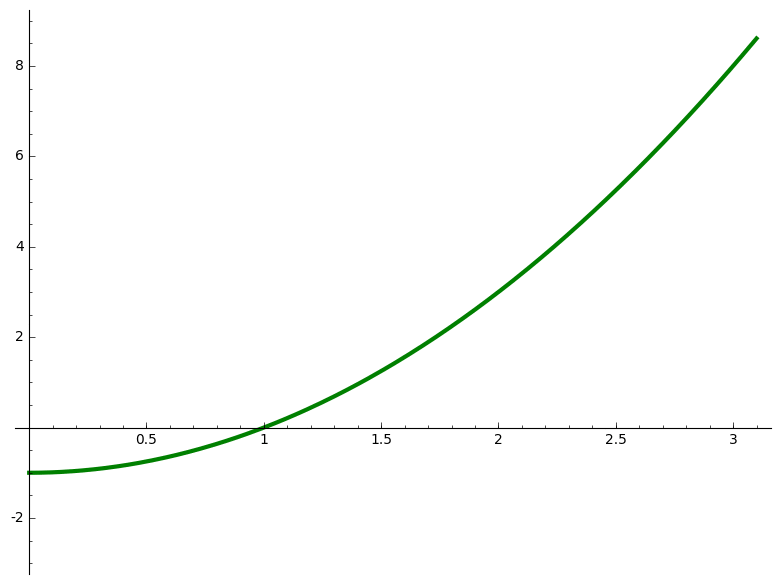Initial Guess: 3.0000000000000000 Next Guess: 1.6666666666666667 Next Guess: 1.1333333333333333 Next Guess: 1.0078431372549019 Next Guess: 1.0000305180437934 Next Guess: 1.0000000004656613 An estimate of the root is 1.0000000004656613
# Use Newton's method to approximate a root of a function with animation var('x') f(x) = x^2 - 1 xmin = 0 xmax = 3.1 ymin = -3 ymax = 9 guess = 3 fprime = f.derivative(x) g(x) = x-f(x)/fprime(x) N = 5 Sguess = [guess] print "Initial Guess: %20.16f"%(guess) P = plot(f(x), (xmin,xmax), ymin= ymin, ymax= ymax,color = "green",thickness=3) Frames = [P] for i in range(0,N): P += plot(point((guess,0),size = 20,rgbcolor=(0, 0, 1))) Frames += [P] P += line([(guess,0),(guess,f(guess))], color="gray", linestyle="dashed") Frames += [P] P += plot(point((guess,f(guess)),size = 20,rgbcolor=(1, 0, 0))) Frames += [P] h = f(guess) + fprime(guess)*(x-guess) P += plot(h, (xmin,xmax),ymin= ymin, ymax= ymax, color = "blue") Frames += [P] Nguess = g(guess) print "Next Guess: %20.16f"%(Nguess) Sguess += [Nguess] guess = Nguess.n(digits=15) print "An estimate of the root is %20.16f"%(Sguess[N]) a = animate(Frames) a.show(delay=100)
-
Just the calculation part of the Newton's method as a function without animation in order to save time.
Initial Guess: 9.0000000000000000 Next Guess: 7.6666666666666670 Next Guess: 7.5507246376811601 Next Guess: 7.5498344877465300 Next Guess: 7.5498344352707498 Next Guess: 7.5498344352707498 An estimate of the root is 7.5498344352707498
# Use Newton's method to approximate a root of a function def Newtons_method(f,a,n): var('x') f(x) = f guess = a fprime = f.derivative(x) g(x) = x-f(x)/fprime(x) N = n Sguess = [guess] print "Initial Guess: %20.16f"%(guess) for i in range(0,N): Nguess = g(guess) print "Next Guess: %20.16f"%(Nguess) Sguess += [Nguess] guess = Nguess.n(digits=15) print "An estimate of the root is %20.16f"%(Sguess[N]) # Usage: Newtons_method(x^2-57,9,5)
-
Plot a surface with its level curves.
-
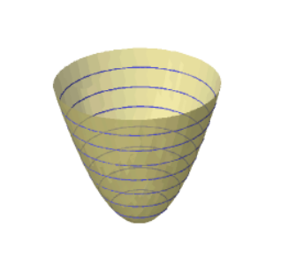
# Plot 3D with level curves var('x,y,z') f = x^2 + y^2 R = 4 sum([implicit_plot3d(f==level,(x,-R,R),(y,-R,R),(z,level,level+0.1),frame=False) for level in srange(0,16,2)]+[implicit_plot3d(f==z,(x,-R,R),(y,-R,R),(z,-1,16),color='khaki',opacity=0.7,frame=False)])
-
Plot a 3D surface with its \(y\)-cross-sections.
-
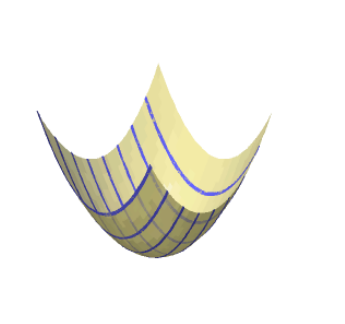
# Plot 3D with y-cross sections var('x,y,z') f = x^2 + y^2 R = 4 sum([plot3d(f,(x,-R,R),(y,level,level+0.1),frame=False) for level in srange(-R,R,1)]+[implicit_plot3d(f==z,(x,-R,R),(y,-R,R),(z,-1,32),color='khaki',opacity=0.7,frame=False)])
-
The code takes a function \(f\) that maps \(\mathbb{R}^2\) to \(\mathbb{R}^2\) and draws three regions:
-
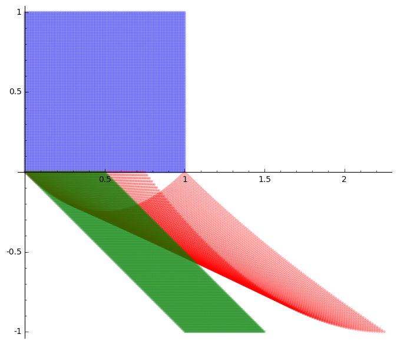
def show_linearization(f,n=100): # f is a function that maps R^2 to R^2 for example # f(x,y) = ((x^2+2*(x+2)*(y+1))/4-1,y^2-(x+1)*y) # The output is three areas: # the unit cube # the image of unit cube under f # the linearization of the image using the Jacobian of f at (0,0) var('x y') A = jacobian(f,(x,y))(0,0) p = f(0,0) domxy = [] imgxy = [] jacxy = [] for i in range(n+1): for j in range(n+1): domxy.append((i/n,j/n)) imgxy.append(f(i/n,j/n)) jacxy.append(p+A*vector([i/n,j/n])) P = points(domxy,color="blue",aspect_ratio=1, alpha = .3) Q = points(imgxy,color="red",aspect_ratio=1, alpha = .3) R = points(jacxy,color="green",aspect_ratio=1, alpha = .3) (P+Q+R).show() f(x,y) = ((x^2+2*(x+2)*(y+1))/4-1,y^2-(x+1)*y) show_linearization(f)
-
For a given function \(f(x)\) around a point \(a\), if you zoom in close enough on the graph of the function, you can’t tell the difference between the curve and the tangent line to the graph of the function at point a. This is the basic idea for linear approximations. Actually you need to run it in sage (click on the link) to be able to interact with it.
-
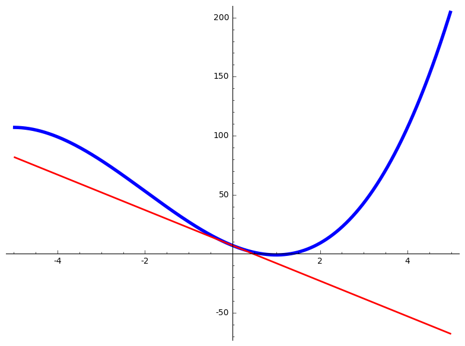
@interact def _( f = ('$f(x)=$', input_box(x^3 + 6*x^2 - 15*x + 7,width=20)), a = ('around the point $x = a$', input_box(0,width=10)), zoom = ('zoom', slider(.1,12,default=1))): g(x) = f(a) + diff(f,x)(a)*(x-a) P = plot(f,(x,a-10*2^(-zoom), a+10*2^(-zoom)), color="blue", axes=True, thickness=4) # for horizontal tangent lines add 'aspect_ratio=1' to see something meaningful, # otherwise sage will just change the ration so that the graph is not just a horizontal line. Q = plot(g,(x,a-10*2^(-zoom), a+10*2^(-zoom)), color="red", axes=True, thickness=2) show(P + Q)
-
The linear approximations have errors. One way to get better approximations is by taking into account the higher order derivatives of the function at the given point. This code will calculate and draw the n-th degree Taylor polynomial of the function so that you can compare them. You need to run it in sage (click on the link) to be able to interact with it.
-
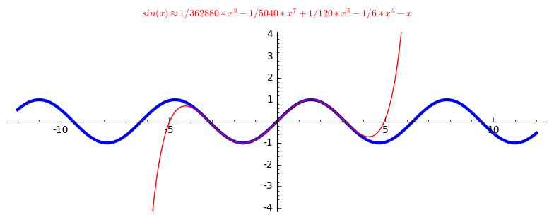
@interact def _( f = ('$f(x)=$', input_box(sin(x),width=20)), n = ('Degree of the Taylor polynomial, $n=$', slider([0..9],default=3)), a = ('around the point $x = a$', input_box(0,width=10)), xzoom = ('range of $x$', range_slider(-12,12,default=(-12,12))), yzoom = ('range of $y$', range_slider(-20,20,default=(-4,4)))): g = f.taylor(x, a, n) P = plot(f,(x,xzoom[0], xzoom[1]), ymin = yzoom[0], ymax = yzoom[1],\ color="blue", axes=True, aspect_ratio=1, thickness=3) Q = plot(g,(x,xzoom[0], xzoom[1]), ymin = yzoom[0], ymax = yzoom[1],\ color="red", axes=True, aspect_ratio=1) R = text(r"$%s \approx %s$" %(f,g),(0,yzoom[1]+1),rgbcolor=(1,0,0)) show(P + Q + R)
- Solving a system of linear equations (using numpy)
- Generate random echelonizable matrix
- Generate random invertible matrix
- Step-by-step Gaussian Elimination
- Step-by-step inverting
- Step-by-step inverting a generic \(2\times 2\) matrix
- Draw Gershgorin disks
- \(\det (I_n) = 0 \).
- \(\det (I_n) = 1 \).
- \(\det (I_n) = n \).
- \(\det (I_n) \) does not exist.
- Randomized groups each day
- Assigned for the whole semester
-
Given the coeeficients matrix \(A\) and the constants \(b\) this solves the system of linear equations \(Ax=b\)
array([[-2.77777778], [ 2.55555556], [-0.11111111]])
from numpy import linalg A = matrix([[1,2,3],[4,5,6],[7,8,0]]) b = matrix([[2],[1],[1]]) x = linalg.solve(A,b) x
-
One of the problems in teaching linear algebra is coming up with a handful of examples of matrices that can 'nicely' be row-reduced. One way to do this is to start with your 'nice' row-reduced matrix and multiply it by a few (or many) 'nice' elementary matrices and there is your example. So, one might want to code this in sage, but it's actually already done. Here is a sample. The first matrix is the randomly generated matrix with integer entries whose reduced row echelon form will also have integer entries, and the second matrix is its reduced row echelon form.
-
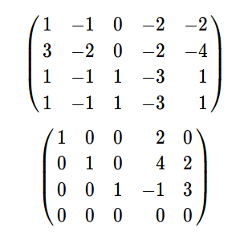
# This code generates a random matrix A of given size and rank, which its rref form is "nice". The second matrix is the echoln form of A A = random_matrix(ZZ,4,5,algorithm='echelonizable',rank=3, upper_bound=5) show(A) show(A.rref())
-
Though a random matrix is invertible with probability one, for pedagogical reasons one might need a matrix with integer entries whose inverse also has integer entries. It is easy to see that for a matrix \(A\) with integer entries to have an inverse with integer entries, it is necessary that its determinant is \(\pm 1\). It turns out that it is the sufficient condition too, surprisingly, thanks to Cramer's rule! Although it might lose some pedagogical purposes, like relating the inverse to the determinant, this code generates random matrices with integer entries where their inverses also have integer entries.
-
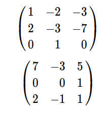
# This generates a random matrix of given size with integer entries where the inverse also has integer entries. # It can be shown that for this to happen it is necessary and sufficient that the determinant of the matrix is 1 or -1. # The first matrix is the random generated matrix, and the second one is its inverse A = random_matrix(ZZ,3,algorithm='unimodular',upper_bound=9) show(A) show(A.inverse())
-
Does step-by-step Gauss-Jordan elimination process, and actually tells you what to do in each step.
-
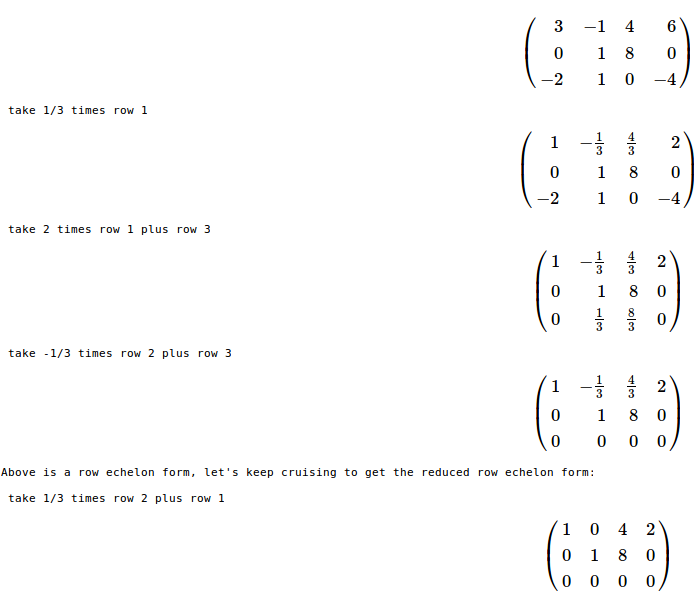
# Naive Gaussian reduction def gauss_method(MATRIX,rescale_leading_entry='Last'): """Describe the reduction to echelon form of the given matrix of rationals. MATRIX matrix of rationals e.g., M = matrix(QQ, [[..], [..], ..]) rescale_leading_entry='First' make the leading entries to 1's while doing Gaussian elimination rescale_leading_entry='Last' (Default) make the leading entries to 1's while reducing Returns: reduced form. Side effect: prints steps of reduction. """ M = copy(MATRIX) num_rows=M.nrows() num_cols=M.ncols() show(M.apply_map(lambda t:t.full_simplify())) col = 0 # all cols before this are already done for row in range(0,num_rows): # ?Need to swap in a nonzero entry from below while (col < num_cols and M[row][col] == 0): for i in M.nonzero_positions_in_column(col): if i > row: print " swap row",row+1,"with row",i+1 M.swap_rows(row,i) show(M.apply_map(lambda t:t.full_simplify())) break else: col += 1 if col >= num_cols: break # Now guaranteed M[row][col] != 0 if (rescale_leading_entry == 'First' and M[row][col] != 1): print " take",1/M[row][col],"times row",row+1 M.rescale_row(row,1/M[row][col]) show(M.apply_map(lambda t:t.full_simplify())) for changed_row in range(row+1,num_rows): if M[changed_row][col] != 0: factor = -1*M[changed_row][col]/M[row][col] print " take",factor,"times row",row+1,"plus row",changed_row+1 M.add_multiple_of_row(changed_row,row,factor) show(M.apply_map(lambda t:t.full_simplify())) col +=1 print "Above is a row echelon form, let's keep cruising to get the reduced row echelon form:\n" for i in range(num_rows): row = num_rows-i-1 if M[row] != 0: for col in range(num_cols): if M[row,col] != 0: if M[row,col] != 1: print " take",1/M[row][col],"times row",row+1 M.rescale_row(row,1/M[row][col]) show(M.apply_map(lambda t:t.full_simplify())) break for changed_row in range(row): factor = -1 * M[row-1-changed_row,col] if factor != 0: print " take", factor,"times row", row+1, "plus row", row-1-changed_row+1 M.add_multiple_of_row(row-1-changed_row,row,factor) show(M.apply_map(lambda t:t.full_simplify())) return(M.apply_map(lambda t:t.full_simplify())) ## Usage: M = matrix(SR,[[3,-1,4,6],[0,1,8,0],[-2,1,0,-4]]) gauss_method(M,rescale_leading_entry='First')
-
Inverts a matrix step-by-step by doing Gauss-Jordan elimination on the matrix augmented with the identity of the same size, and actually tells you what to do in each step.
-
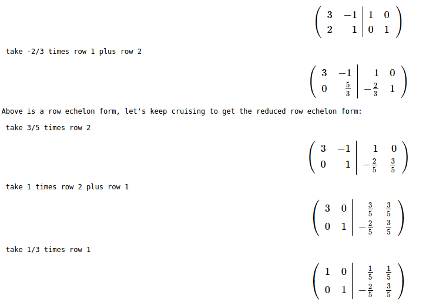
# Naive Gaussian reduction def gauss_method(MATRIX,rescale_leading_entry='Last'): """Describe the reduction to echelon form of the given matrix of rationals. MATRIX matrix of rationals e.g., M = matrix(QQ, [[..], [..], ..]) rescale_leading_entry='First' make the leading entries to 1's while doing Gaussian elimination rescale_leading_entry='Last' (Default) make the leading entries to 1's while reducing Returns: reduced form. Side effect: prints steps of reduction. """ M = copy(MATRIX) num_rows=M.nrows() num_cols=M.ncols() show(M.apply_map(lambda t:t.full_simplify())) col = 0 # all cols before this are already done for row in range(0,num_rows): # ?Need to swap in a nonzero entry from below while (col < num_cols and M[row][col] == 0): for i in M.nonzero_positions_in_column(col): if i > row: print " swap row",row+1,"with row",i+1 M.swap_rows(row,i) show(M.apply_map(lambda t:t.full_simplify())) break else: col += 1 if col >= num_cols: break # Now guaranteed M[row][col] != 0 if (rescale_leading_entry == 'First' and M[row][col] != 1): print " take",1/M[row][col],"times row",row+1 M.rescale_row(row,1/M[row][col]) show(M.apply_map(lambda t:t.full_simplify())) for changed_row in range(row+1,num_rows): if M[changed_row][col] != 0: factor = -1*M[changed_row][col]/M[row][col] print " take",factor,"times row",row+1,"plus row",changed_row+1 M.add_multiple_of_row(changed_row,row,factor) show(M.apply_map(lambda t:t.full_simplify())) col +=1 print "Above is a row echelon form, let's keep cruising to get the reduced row echelon form:\n" for i in range(num_rows): row = num_rows-i-1 if M[row] != 0: for col in range(num_cols): if M[row,col] != 0: if M[row,col] != 1: print " take",1/M[row][col],"times row",row+1 M.rescale_row(row,1/M[row][col]) show(M.apply_map(lambda t:t.full_simplify())) break for changed_row in range(row): factor = -1 * M[row-1-changed_row,col] if factor != 0: print " take", factor,"times row", row+1, "plus row", row-1-changed_row+1 M.add_multiple_of_row(row-1-changed_row,row,factor) show(M.apply_map(lambda t:t.full_simplify())) return(M.apply_map(lambda t:t.full_simplify())) ## Usage: M = matrix(SR,[[3,-1],[2,1]]) R = gauss_method(M.augment(identity_matrix(M.ncols()),subdivide=True))
-
Inverts a generic \(2\times 2\) matrix step-by-step by doing Gauss-Jordan elimination on the matrix augmented with the identity of the same size, and actually tells you what to do in each step. You can do the same on a \(3\times 3\) or larger matrix by doing a similar process. like below:
var('a b c d e f g h i j k l m n o p q r s t u v w x y z') A = matrix([[a,b,c],[d,e,f],[g,h,k]]) R = gauss_method(A.augment(identity_matrix(A.ncols()),subdivide=True))And then you can see the final result by reading only the augmented part:view(R.subdivision(0,1))
Of course it's going to look a little ugly, so you might want to first multiply it by the determinant of the original matrix and then simplify it:view((det(A)*R.subdivision(0,1)).apply_map(lambda t:t.full_simplify()))
-
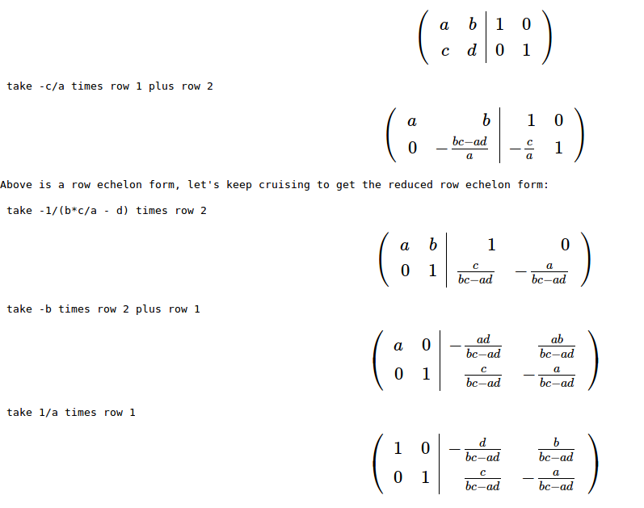
# Naive Gaussian reduction def gauss_method(MATRIX,rescale_leading_entry='Last'): """Describe the reduction to echelon form of the given matrix of rationals. MATRIX matrix of rationals e.g., M = matrix(QQ, [[..], [..], ..]) rescale_leading_entry='First' make the leading entries to 1's while doing Gaussian elimination rescale_leading_entry='Last' (Default) make the leading entries to 1's while reducing Returns: reduced form. Side effect: prints steps of reduction. """ M = copy(MATRIX) num_rows=M.nrows() num_cols=M.ncols() show(M.apply_map(lambda t:t.full_simplify())) col = 0 # all cols before this are already done for row in range(0,num_rows): # ?Need to swap in a nonzero entry from below while (col < num_cols and M[row][col] == 0): for i in M.nonzero_positions_in_column(col): if i > row: print " swap row",row+1,"with row",i+1 M.swap_rows(row,i) show(M.apply_map(lambda t:t.full_simplify())) break else: col += 1 if col >= num_cols: break # Now guaranteed M[row][col] != 0 if (rescale_leading_entry == 'First' and M[row][col] != 1): print " take",1/M[row][col],"times row",row+1 M.rescale_row(row,1/M[row][col]) show(M.apply_map(lambda t:t.full_simplify())) for changed_row in range(row+1,num_rows): if M[changed_row][col] != 0: factor = -1*M[changed_row][col]/M[row][col] print " take",factor,"times row",row+1,"plus row",changed_row+1 M.add_multiple_of_row(changed_row,row,factor) show(M.apply_map(lambda t:t.full_simplify())) col +=1 print "Above is a row echelon form, let's keep cruising to get the reduced row echelon form:\n" for i in range(num_rows): row = num_rows-i-1 if M[row] != 0: for col in range(num_cols): if M[row,col] != 0: if M[row,col] != 1: print " take",1/M[row][col],"times row",row+1 M.rescale_row(row,1/M[row][col]) show(M.apply_map(lambda t:t.full_simplify())) break for changed_row in range(row): factor = -1 * M[row-1-changed_row,col] if factor != 0: print " take", factor,"times row", row+1, "plus row", row-1-changed_row+1 M.add_multiple_of_row(row-1-changed_row,row,factor) show(M.apply_map(lambda t:t.full_simplify())) return(M.apply_map(lambda t:t.full_simplify())) ## Usage: var('a b c d') A = matrix([[a,b],[c,d]]) R = gauss_method(A.augment(identity_matrix(A.ncols()),subdivide=True))
-
Gershgorin circle theorem roughly states that the eigenvalues of an \(n \times n\) matrix lie inside \(n\) circles where \(i\)-th circle is centred at \(A_{i,i}\) and its radius is the sum of the absolute values of the off-diagonal entries of the \(i\)-th row of \(A\). Applying this to \(A^{\top}\) implies that the radius of this circles shall be the smaller of the sums for rows and columns. This Sage code draws the circles for a given matrix.
-
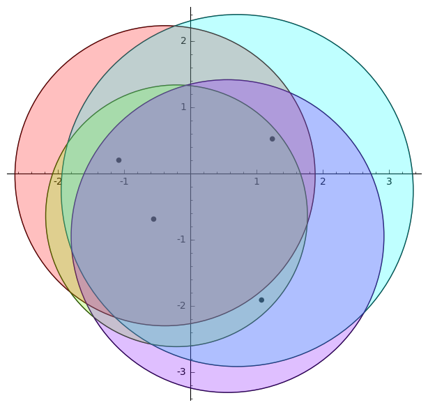
def Gershgorin(A,evals=False): # A is a square matrix # Output is the Gershgorin disks of A from sage.plot.circle import Circle from sage.plot.colors import rainbow n = A.ncols() Colors = rainbow(n, 'rgbtuple') E = point([]) B = A.transpose() R = [(A[i-1,i-1], min(sum( [abs(a) for a in (A[i-1:i]).list()] )-abs(A[i-1,i-1]),\ sum( [abs(a) for a in (B[i-1:i]).list()] )-abs(B[i-1,i-1])))\ for i in range(1,n+1)] C = [ circle((real(R[i][0]),imaginary(R[i][0])), R[i][1], color="black") for i in range(n)] if evals == True: E = point(A.eigenvalues(), color="black", size=30) CF = [ circle((real(R[i][0]),imaginary(R[i][0])), R[i][1], rgbcolor=Colors[i],\ fill=True, alpha=1/n) for i in range(n)] (sum(C)+sum(CF)+E).show() ## Usage: A = random_matrix(CDF,4,) Gershgorin(A,evals=True)
Teaching Philosophy
and this can be achieved when learners are actively and independently engaged in a learning process, and when they can share this experience together. Traditionally, mathematics is taught as mostly lecture. In my classes I use a mix of strategies. For instance, in some of my classes I give only short lectures at the beginning of each day, or some days I do not lecture at all. Instead, students are given worksheets that include problems that are arranged from basic one-step questions to more involved computational and conceptual problems. Students form groups that they stay with for a portion of the semester, and they work on the worksheets in their groups. I attend each group and answer their questions and direct their discussions. Sometimes that I feel necessary, I give a mini lecture for the class, or solve one of the problems on the board, and then I let the group discussions continue. At the end of the day I post the solutions online, where the students can access them after they are ready for it. Often students come to me at the end of a class to tell me that they liked the time when they could get their hands dirty on a problem during the class, and usually they ask for more such opportunities. I have seen those "ahha!" moments happening in class when students ask a question from a group-mate and get responses from them, or when they discover new concepts or identify a common mistake together. Some of them have told me that they learned a topic when they taught it to a classmate. A few years ago I taught two linear algebra courses, one lecture based, and one using the method I described here. The response rate to my in-class questions in the second method was much higher, and the students overall performed better in the exams. I am currently working on how to incorporate these activities in larger classrooms.Learners are strongly encouraged when the teacher is passionate about the subject and is respectful of the learners. A common comment that I receive from my students is that my excitement about teaching a topic made them interested in learning about it. As a result they paid more attention to it in class, asked more questions, and got actively engaged in learning as they made connections between their life or disciplines and the topic being discussed. I motivate a lot of topics in mathematics and statistics with real life applications. For example, in a linear algebra course I explain how google uses "eigenvectors" to sort the search results, or how instagram applies certain filters on images using "projections". In a statistics course, I use various games such as "plinko" to motivate topics. Often, I bring in pieces of history of mathematics and mathematicians to the discussions. I ask an open-ended question from students, and then direct them to ask more precise questions. For instance, I ask "how do you estimate the area of a potato-shaped closed curve?", and then we work together until we find better questions. Then I tell them that they would be as famous as Archimedes or even Riemann only if they were born a few hundred years ago, because they asked the same questions that they did. One of my favourite parts of teaching is getting students excited about coming up with ideas on how a lesson relates to their disciplines, how they can explain a topic to their little sibling or to their parents in a fun way, or even how to bring it up at a party. One of my challenges is to keep students motivated and active for the entire time of class. Ideally, I would love them to keep asking questions until they get to the questions that they can answer, and then work their way backwards to answer the big questions.I constantly seek for feedback from my students. If I see them on the hallways or when we are just walking to the class, I ask them about how they feel about the course, how do they think they are performing, and what are the things that they like or do not like in the class. I also send online feedback forms to students during the semester to get an understanding of how I am doing, and often I make changes according to what the students say during the semester. One of my strategies to get an informative feedback is to explain to students the results of feedback my previous students have given. Then I report on their feedback immediately, and communicate to them how I am going to implement their suggestions. I am thinking about a sustainable way of continually getting feedback from students on a daily basis and implementing it in my classes. Also, as students need our feedback to improve, I feel I need my peers' feedback to improve. Hence, I continually seek feedback from my colleagues on my teaching. Moreover, I ask people from outside mathematics department to observe my classes so that I also see a non-mathematician's point of view on delivering methods, and not just the content.Teaching Experiences and Strategies
I have taught graduate and undergraduate mathematics courses for the past eight years and I have been trying various strategies, environments, and tools to improve the learning experience for students from diverse backgrounds in various classroom settings, from online courses to small classes of 15 students and to large classes of 300+ students. Over that past few years, I have participated in various workshops and conferences to enhance my knowledge and skills set for teaching and learning.
I have participated (an I am certified) in the Instructional Skills Workshop (an internationally acclaimed instructor development program encouraging reflection and examination of one's teaching practices with feedback focused on the learning process). This workshop gave a lot of structure to my teaching practices, and added lots of tools to my teaching toolbox. After one year of practice, now I am very comfortable planning every day of my class using BOPPPS model, and aligning all parts of the class activities, homework, exam, lab activities etc with Bloom's taxonomy. Also, through this workshop and a few others, I have developed various strategies to get the most meaning out of students feedback, seek informative feedback from my colleagues, and to reflect on my own teaching strategies. Also, parts of this workshop and a few other ones have helped me better plan the flipped learning aspects of my courses, better evaluate them, and to design more meaningful student assessments.
I have participated (and I am certified) in the Course Design Program (a program focusing on aligning all aspects of a course from syllabus to final exam, and from class activities to outcomes, by encouraging a backward design point of view). The program has helped me not only to completely internalized (for myself) what are the goals of each course (whether I design it, or I only deliver it), but also to be able to better communicate such goals with students, and hence shaping their way of learning by focusing on the outcomes. One of the immediate results of employing such a strategy is that my students feel more like what they are doing in class and in their homework is related to what I expect from them, and it is aligned well with the exams, projects, and other assessments. Just this one change in enough to have them try more to succeed in the course.
I have always been fascinated by how naturally I learn mathematics in an ''experimental'' setting. As a result, I always wanted to provide such a learning environment for my students. Since I started teaching I have participated in many discussions about Inquiry Based Learning including a conference by Academy of Inquiry Based Learning (AIBL), and I am a member of the community. As a result, one of the common strategies that I employ in my teaching is by asking open ended questions that target the final goal of the lesson. Then I let the students discuss their ideas and I try to direct their discussions and questions. This has proven to be very effective in cementing the core ideas of each lesson, and also encouraging students to try to discover mathematics on their own. This method not only works in graduate courses, but also it is very effective in freshman courses.
As I have mentioned in my teaching philosophy, I believe learning is done by doing, and flipped learning environment is best fit for this purpose. In this setting, students read part of a book, an article, or a handout at home, or watch a short video before coming to class. That is when the "lecture" is given. During the class, students start working on assignments, or problems that prepare them to learn and investigate more in depth questions. In a high level mathematics course, it is argued that this method helps students to own the concepts, and discover it on their own. In lower level mathematics courses, this lets students to learn the main ideas on their own pace, e.g. re-watch the video, rewind, search on internet etc, and during the class they get their hands dirty on actual problems, and exactly when they need the most help, the instructor and TA's are there to help them. Flipped learning is one of the most active and student-based methods for learning. I have taught an entire linear algebra course in a flipped setting, and I use it to some extent in all courses that I teach. I have participated in a few workshops addressing different challenges that this method faces and potential solutions for them. Below I will describe some of the main aspects of my experience:
Undoubtedly, everything falls apart in a flipped learning experience if the learners haven't done their pre-class activities. To ensure that students do these activities, whether it is watching a video, or reading part of the book, or a handout, or reflecting on their thoughts on a certain topic, I prepare a short quiz for every day of class. The quizzes address one of the simplest new things they needed to get from their activity. The questions are designed so that the students do not feel like they need to actually learn anything from processing what they have done, rather simply just remember what they have seen, targeting the lowest level of Bloom's taxonomy. For example, if I ask them to watch a video on determinants, and it is mentioned in the video that \(\det(I_n) = 1\), then I could ask them a multiple choice question such as the following. Choose the correct statement:
Then sticking to this quiz and having it on a regular basis, ensures the students that they need to do their part. After a couple of weeks into the semester, students are used to the routine, and will do their pre-class activities. Often towards the end of semester I can ignore quizzes so that I give students more in-class time, which they will benefit more from it.
Also, these quizzes can be done online, which saves the in-class time. Depending on the course, and the type of pre-class activities, I assign very low (2%) to very high (30%) of their total grade to these quizzes.
No matter what you do, there are students that once in a while come to the class without having their pre-calls activities. This could be for a valid reason, or not, which is not the point. In any case, one thing that I am sure about is that I do not want to lose these students during class. So, I often start with a short review of what they have ''learned'' in their pre-class activity, usually 5-10 minutes. If the quizzes are done online before the class, I look where students made most mistakes, and if not, I gather info from previous experiences as what parts of the topics are confusing for students in general, and I spend more time on that part in my review, sometimes adding a few more examples, or a different explanation for a particular situation. I let the discussion begin right here with inviting students to ask questions and answer each other's questions.
Then, the students are presented with a worksheet, broken into groups, and the rest of the class is spent on solving the problems on the worksheet. The nature of these problems are so that they build on their knowledge from the pre-class activity, asking them similar questions to the ones that they have already seen, and probably have notes on them from their pre-class activity. Then, the questions slowly start to get deeper into more complex conceptual situations, and finally more complicated computations, depending on the nature of the topic. I often design these worksheets with an expectation that the students will not be done with it by the end of class period, leaking it into their post-class activity.
If you talk with people who are not in favour of flipped learning, one their main reasons is that they don't see the instructor being relevant in this setting any more. However, this is exactly where I see my role as an instructor to be of extreme importance. While anyone can deliver a lecture, and still there will a better version of it somewhere on YouTube or MathTube, in my opinion, it is what an instructor does in class that makes all the difference, and I as an instructor, can help facilitate this learning environment which is unique, and is tailored to my students. This is something that has been celebrated by my students during and after the semester, and they mention their experience as one of a kind, years after graduation.
The students are expected to finish their work on the worksheets that they have started in class, after the class period is over. Usually, the worksheets end up with relatively open-ended or exploratory questions that connects the current topic of the course to the one of the next day of class. Then, this is followed by some homework assignments, and of course the next day's pre-class activity. Times to times I have students to write reflective summaries of what they have learned and share it with me. Most students find this very helpful for them to tie each topic to the big picture.
I have experimented a few different ways of breaking students into groups, and there are many more. You can read about some of them here. The ones I have tried are:
In the second method, I try to gain some background data from students, and then I put them in groups in such a way that in each group I get a range of mathematical abilities, majors, and attitude towards group-work and math. I feel(!) this is a good way of mixing them up. The benefits of this method of grouping people is that they get used to each other and build a deep trust relationship, which sometimes end up in long-term partnership in their education, and they can be hold accountable for more outcomes. The draw backs are that students might start having problems with each other, or they just don't click. I have to make the concept of groups loose for the first couple of weeks and allow for minimal changes in group formations, and then freeze the formation at the end of the second week of semester. I would still need to deal with problems that arise later on in the semester though. However, the groups work a lot more efficiently this way.
I start each semester by sending out a form to students before the classes start, asking them about who they are, what their goals are, and what keeps them up at night. Why the are taking this course, what they know, and what they want to take with them from this class. This not only starts the semester with a positive vibe for students, it helps me to relax and make myself comfortable with students. Later, this provides me a grounds for communicating with students, and knowing their goals and concerns, I can set the tone and the pace of the course according to their level of comfort. I usually share the students' responses with the whole class, anonymously. one particular example can be seen here. Around the middle of the semester (sometimes twice a semester), I ask students to tell me how things are going in class. I am usually curious to know what they like me to keep doing, and what they want me to stop doing. Their comments have been very informative and honest. I have even changed the whole teaching method from lecture based to flipped class in the middle of semester because all students wanted that, after one day of trial. I collect the responses, summarize them, and report back to students with what they asked for, and how am I going to change my approach, or if I am not changing something that most of them wanted, I do let them know that why I have made such decision. This has proven to be very effective as students are very understanding, and they do care about their learning outcomes. In particular, this whole process has helped me to get much more informative feedback from students at the end of semester, and I take them and apply them to the following semesters. On the other hand, I provide plenty of feedback to students, as where they stand in class, how their learning is being evaluated, and what they can try to improve their learning experience. In a large class, this is usually done through online homework systems. Moreover, I always announce detailed statistics of the grades of the class, so that students can evaluate how they are doing compared to their peers. During the class, specially after each exam, I go over what questions got lowest rates, what was particularly hard about those problems, what are the correct answers, and what should the students do to improve their knowledge on that particular topic. I also think that students with a grade C are particularly in need for feedback and advice. Around the mid-semester, I call these students to visit my office and I spend some time with them to try to figure out where the problem lies, and how we can fix it.
At least once a year I ask a colleague to come and observe my class, in order to provide me some feedback. Some times I ask the person to give me overall feedback on how the class went, what was particularly good, and what was gone horribly bad. Other times, I ask them to come in and look for a particular aspect of my teaching, such as, "do I make enough eye contact?", "did I wait enough for students to respond after I asked a question?", "do I speak too fast?" etc. Many iterations of these informative feedback from my colleagues have helped me fine tune unconscious parts of my teaching. At least once a week I have discussions on various aspects of teaching with my colleagues and supervisors. This can be on a particular problem that they or I have faced recently, or a general topic that we think we can bounce some ideas around to make it more practical.
Often, I use Sagemath in class to help students visualize different concepts, specially in calculus and linear algebra courses. I also use it in various courses just for computations. I always share the code that I use, as well as some quick reference manuals, with students so that they can go on and experiment with it. The students who do use the code have reported back very happily that it has helped them a lot in their understanding. For my first year calculus course I also make use of a resources on GeoGebra by Marc Renault, which has been a tremendous help in visualizing calculus.
One of the more private parts of my teaching practice is to reflect on my teaching experience every day after class. It is an shockingly affective in tracking the effectiveness of methodologies, and to come up with better strategies.
An old Japanese practice in teaching (mathematics) is getting more and more spread throughout the west. The idea is to treat teaching like research. If you want to know how best to teach a certain topic, first plan your teaching in a way that students' learning and thinking becomes observable (that is a whole different art by itself). Then plan a topic with some colleagues, design student activities etc, and invite your colleagues to observe your class. At this point it does not really matter that who is teaching it, since everything is planned. Then the observers will record how students did (not) learn/think. Go back to your group with this observations and make adjustments, and repeat. It is suggested to do this at most twice a year.Sample Teaching Materials
Calculus I: An introductory lecture based course.
Calculus III: A higher level lecture based course.
Linear Algebra: An introductory flipped course.
Statistics: An introductory interactive course.